The Student Veterans of America Organization (SVA), is a nationally known Organization comprised of many Student Veteran run chapters across the country. These chapters are dedicated to community service, Veteran mental health and well-being, community, and advocation of policy to improve the quality of life for Veterans on campus. Every year, in early January, there is a National Conference (NatCon) held in either Texas, California (LA), or Florida(Disney). At this conference, many chapters around the country gather to sit in lectures or panels on things like leadership, running a student organization, the job hiring process, and advocacy for Veterans. There are also guest speakers and awards for Veteran of the Year, Chapter of the Year, etc.
Here are pictures of local chapters in Michigan that I have been a part of (Oakland University for Undergrad and University of Michigan during Grad School).
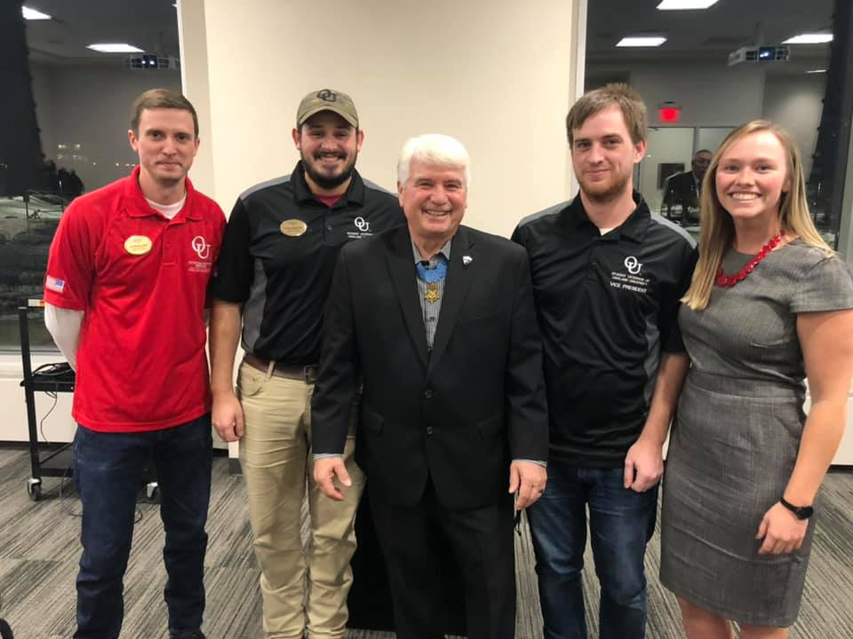
 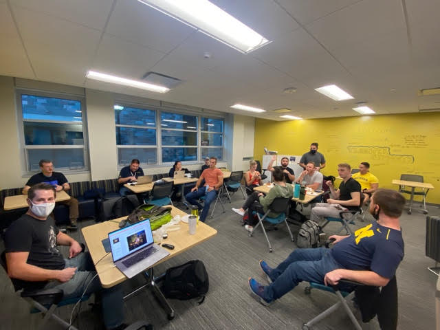
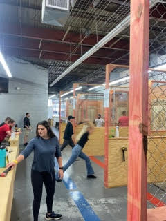
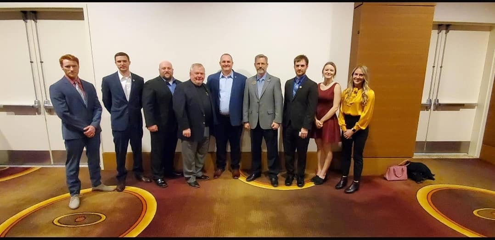
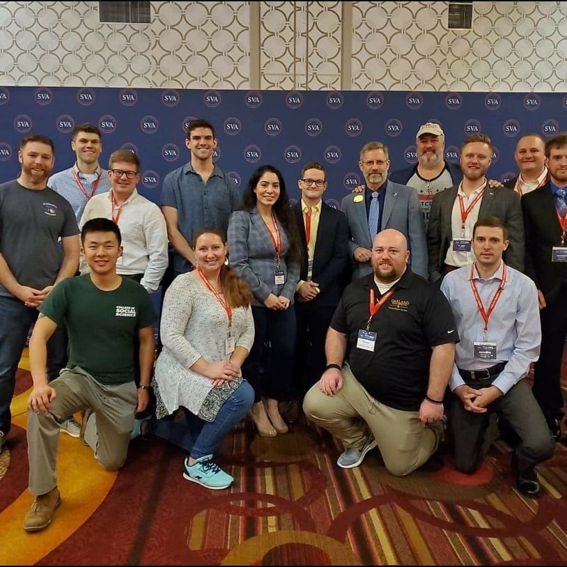
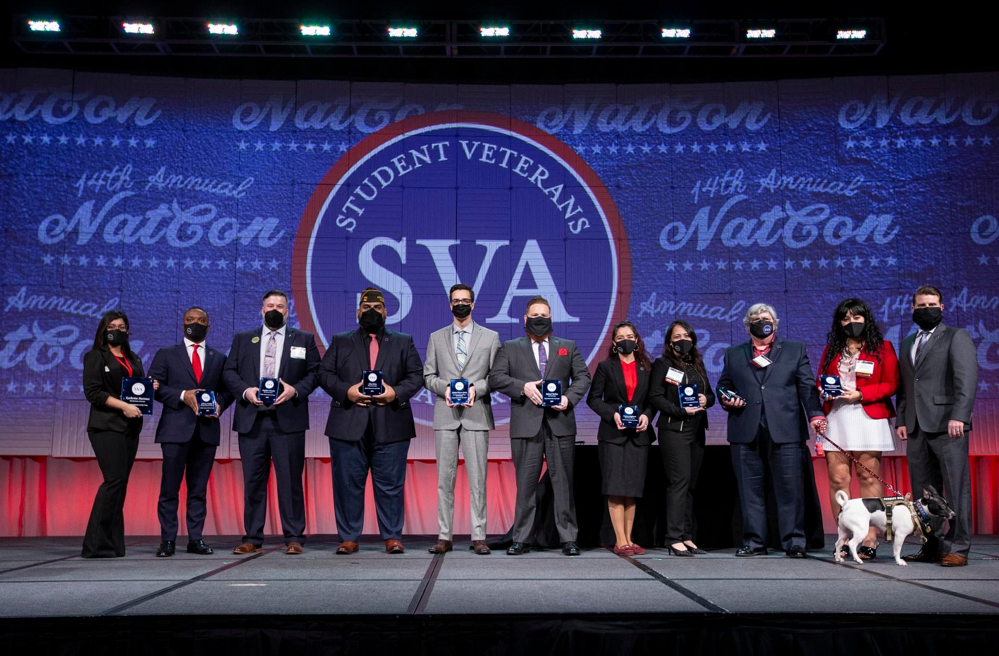
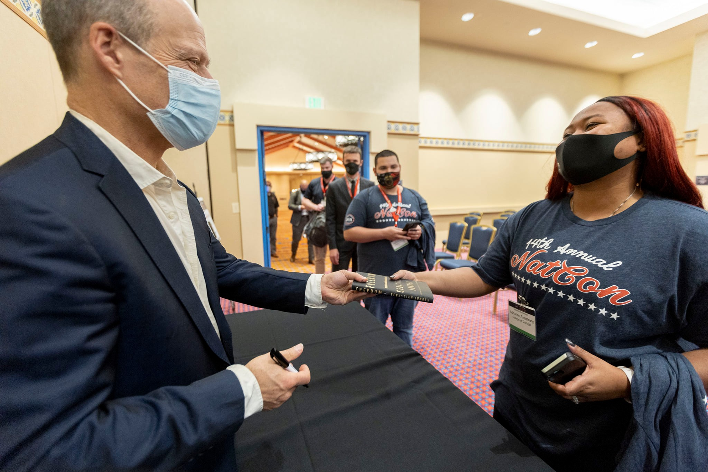
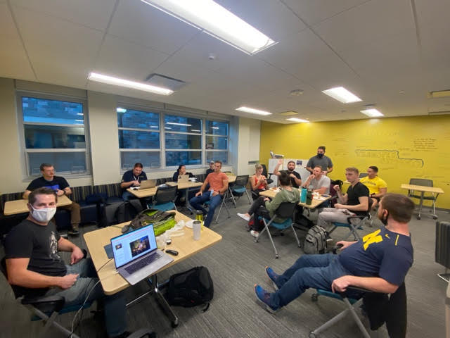
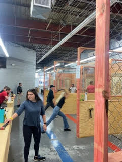
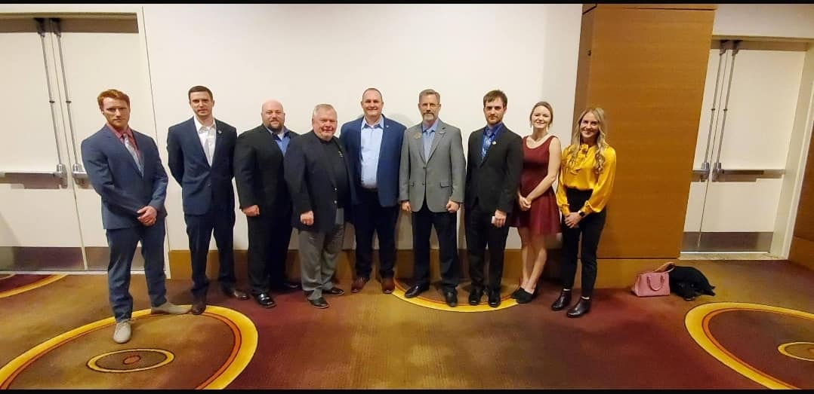
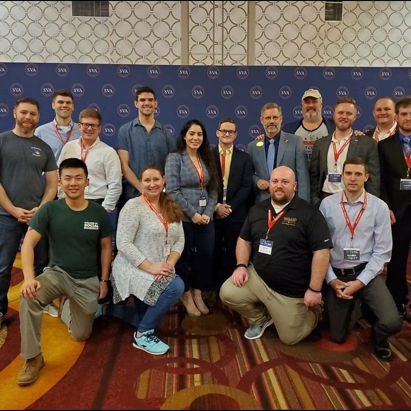
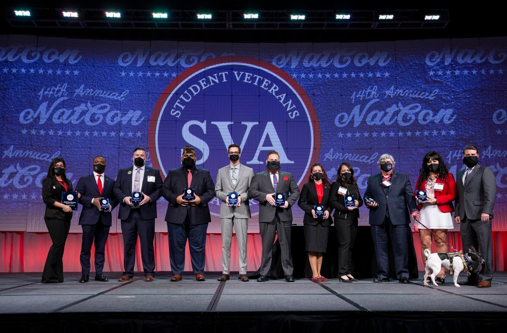
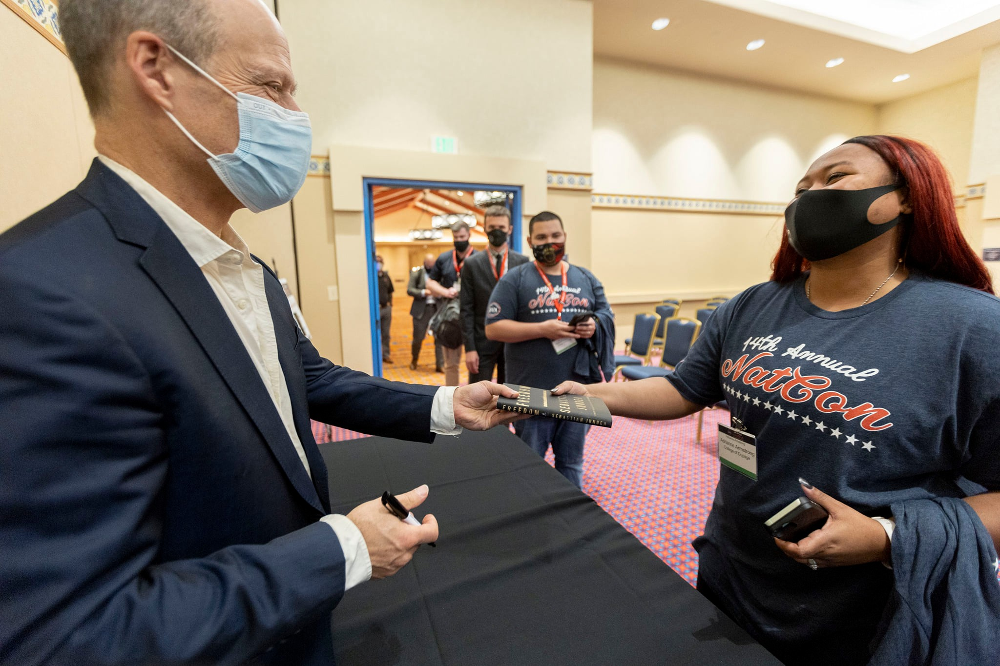